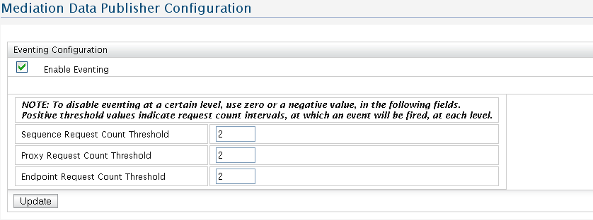

Using this configuration user interface, eventing can be enabled or disabled at global level, as well as the three threshold values be set. If eventing is disabled, no events will be fired at all. If eventing is enabled, events will be fired based on the threshold values being satisfied.These events will be captured by BAM server and datas will be saved at the BAM database.
The key three threshold values, which user need to set, are:

Figure 1: Data Publisher Configuration
Sequence Request Count Threshold
An event will be fired with sequence data, when the difference between the sequence request count at which the last event was fired and the current sequence request count becomes greater than this threshold value.
Proxy Request Count Threshold
An event will be fired when the difference between the request count for a proxy service at which the last event was fired for that proxy service and the current request count for that proxy service becomes greater than this threshold value.
Endpoint Request Count Threshold
An event will be fired with endpoint data, when the difference between the request count for an endpoint at which the last event was fired for the endpoint and the current request count for that endpoint, becomes greater than this threshold value.
All the threshold values are set to '2' by default. User could change the threshold values based on his need and click 'update' to make system to fire the events in new threshold values.
Note:-